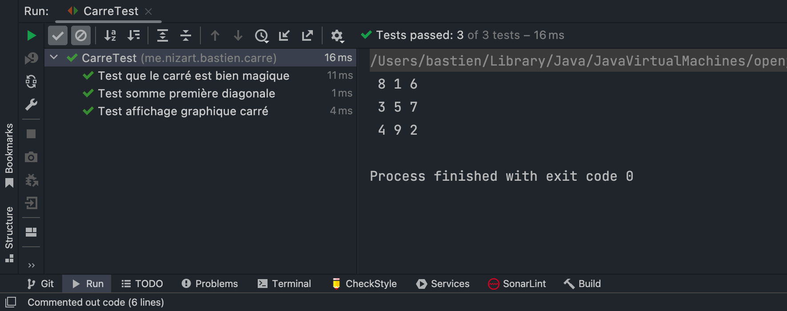
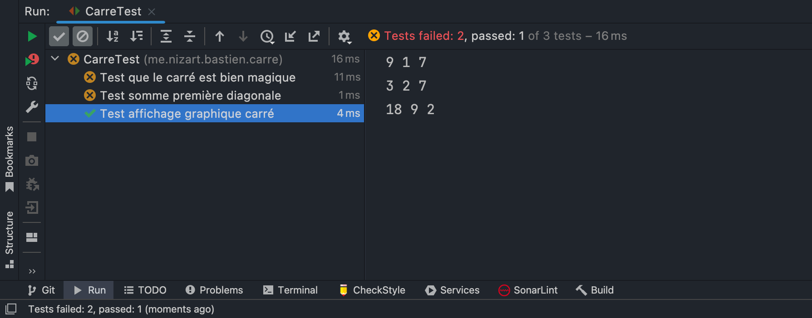

Carré Magique en JAVA
Description
Ce petit projet JAVA permet de créer un objet Carre. Puis de vérifier si ce dernier est un carré magique ou non.
Description technique
- Langage : Java
- Test : JUnit 5
Rappel Carré Magique
On dit qu’un carré est un carré magique si ce dernier réuni deux conditions :
- la somme des nombres des diagonales est égale à la somme des nombres des colonnes. Elle-même égale à la somme des nombres d’une ligne
- Il existe, dans ce carré de taille n, tous les nombres compris entre 1 et n²
Utilisation du programme
Ligne
Pour générer l’instance d’une ligne, il suffit d’appeler son constructeur
Ligne ligne = new Ligne(int dimension, int[] valeurs)
- dimension : le nombre d’éléments présent dans la ligne
- valeurs : tableau de nombre (de taille
dimension) à insérer dans la ligne
Carré
Pour générer l’instance d’un Carré, il suffit d’appeler son constructeur
Carre carre = new Carre(int dimension, Ligne[] lignes)
- dimension : La longueur / largeur du carré
- lignes : un tableau de ligne
Vérification
Pour vérifier que l’instance d’un carré est magique, il suffit d’appeler la méthode estMagique() sur l’instance de
notre carré
boolean resultat = carre.estMagique()
- resultat : vrai si le carré est magique, sinon faux
- carre : notre instance d’un carré
Trouver la constante magique
La constante magique d’un carré de taille n est le nombre auquel est égal la somme des lignes, des colonnes, des
diagonales.
Pour la trouver à partir du programme, pas besoin d’instancier un carré, il suffit d’exécuter une méthode statique de la classe carré.
Carre.trouverConstanteMagique(int dimension)
- dimension : La longueur / largeur du carré
Exemple d’utilisation
Avec un carré magique
Dans cet exemple, nous utiliserons la matrice :
| 8 | 1 | 6 |
|---|---|---|
| 3 | 5 | 7 |
| 4 | 9 | 2 |
Qui est un carré magique de constante magique n = 15
Après avoir créé un objet du type Carre dans notre programme, et lui avoir fourni les valeurs de notre matrice.
Les résultats des tests sont les suivants :

Nous voyons donc que le programme reconnaît ce carré comme étant un carré magique.
Avec un carré classique
Dans cet exemple, nous utiliserons la matrice :
| 9 | 1 | 7 |
|---|---|---|
| 3 | 2 | 7 |
| 18 | 9 | 2 |
Qui n’est pas un carré magique et n’a donc pas de constante magique.

Nous voyons donc que le programme reconnaît ce carré comme n’étant pas un carré magique.
Compétences acquises
- Math : J’ai appris ce qu’était un carré magique ainsi qu’une constante magique.
- Java : J’ai manipulé le langage java, ainsi que la librairie de test JUnit 5.